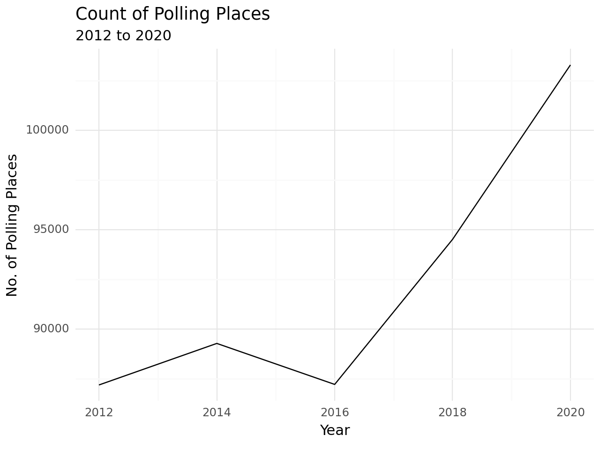

import pandas as pd
from dfply import *
from plotnine import *
import sslUS Polling Places
How many polling places the US opened in each election year, 2012 to 2020.
Python
line chart
A first TidyTuesday chart in Python: counting US polling places per election year from the 2012–2020 polling-places dataset with pandas, dfply and plotnine.
TidyTuesday week16 Jan 2024
Built withPython · pandas, dfply, plotnine
ChartsLine chart
0. Loading Libraries
1. Data Loading
## adding below ssl line as it is giving ssl error locally in my machine
ssl._create_default_https_context = ssl._create_unverified_context
polling=pd.read_csv("https://raw.githubusercontent.com/rfordatascience/tidytuesday/master/data/2024/2024-01-16/polling_places.csv")
polling.head()| election_date | state | county_name | jurisdiction | jurisdiction_type | precinct_id | precinct_name | polling_place_id | location_type | name | address | notes | source | source_date | source_notes | |
|---|---|---|---|---|---|---|---|---|---|---|---|---|---|---|---|
| 0 | 2020-11-03 | AL | AUTAUGA | AUTAUGA | county | NaN | AUTAUGAVILLE VOL FIRE DEPT | NaN | election_day | AUTAUGAVILLE VOL FIRE DEPT | 2610 HIGHWAY 14 W, AUTAUGAVILLE, AL 36003 | NaN | ORR | 2020-10-21 | NaN |
| 1 | 2020-11-03 | AL | AUTAUGA | AUTAUGA | county | NaN | BILLINGSLEY COMMUNITY CENTER | NaN | election_day | BILLINGSLEY COMMUNITY CENTER | 2159 COUNTY RD 37, BILLINGSLEY, AL 36006 | NaN | ORR | 2020-10-21 | NaN |
| 2 | 2020-11-03 | AL | AUTAUGA | AUTAUGA | county | NaN | BOONE'S CHAPEL | NaN | election_day | BOONE'S CHAPEL | 2301 COUNTY RD 66, PRATTVILLE, AL 36067 | NaN | ORR | 2020-10-21 | NaN |
| 3 | 2020-11-03 | AL | AUTAUGA | AUTAUGA | county | NaN | BOOTH VOL FIRE DEPT | NaN | election_day | BOOTH VOL FIRE DEPT | 1701 COUNTY ROAD 10, BOOTH, AL 36008 | NaN | ORR | 2020-10-21 | NaN |
| 4 | 2020-11-03 | AL | AUTAUGA | AUTAUGA | county | NaN | CAMELLIA BAPTIST CH | NaN | election_day | CAMELLIA BAPTIST CH | 201 WOODVALE ROAD, PRATTVILLE, AL 36067 | NaN | ORR | 2020-10-21 | NaN |
2. Data Transformation
polling['year'] = polling['election_date'].apply(lambda x: int(x.split('-')[0]))
polling_summary = (polling >> group_by(X.year) >> summarize(count=n(X.year)) )3. Plotting
(polling_summary >>
ggplot(aes(x = 'year', y = 'count')) +
geom_line() + theme_minimal() +
labs (
x = "Year",
y = "No. of Polling Places",
title = "Count of Polling Places",
subtitle = "2012 to 2020"
)
)
One week down